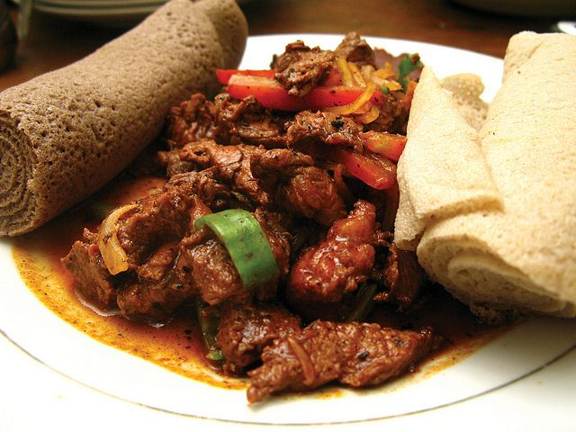
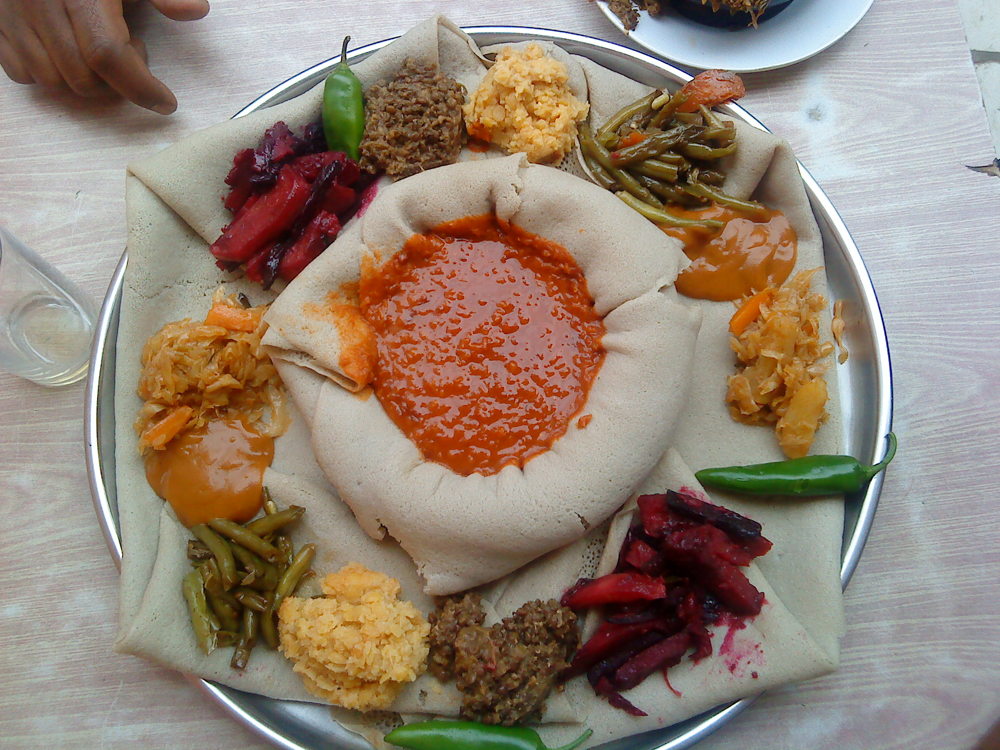

Featured Recipes

awaze tibs
In a bowl, mix together steak,onion, rosemary, ginger, berbere, salt and add oil and butter on a pan of medium heat.
View Recipe

Beyenetu
In a bowl, mix together steak,onion, rosemary, ginger, berbere, salt and add oil and butter on a pan of medium heat.
View Recipekilkil
Combination of potatoes, green beans, and carrots, minced garlic, smoked paprika, curry powder, black pepper, chill pepper and aromatic spices.
View Recipe
Doro Wot
Marinated chicken piece, onion, tomato paste, garlic, ginger, berber, bolied eggs spice simmer until thickened. Serve with injera (Ethiopian flat bread)
View Recipe